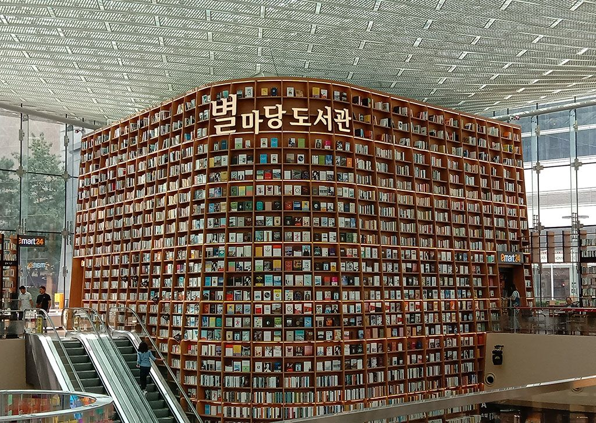

Korea Selatan dikenal sebagai negara yang sangat menghargai 'literasi dan pendidikan', menempatkannya sebagai pillar utama dalam pembangunan masyarakat dan kemajuan bangsa, Di setiap sudut negara ini, perpustakaan memainkan peran vital sebagai pusat pengetahuan dan pembelajaran. Lebih dari sekadar tempat penyimpanan buku, perpustakaan di Korea Selatan menjadi ruang bagi masyarakat untuk berkembang, berinovasi, dan menjalin interaksi sosial. Perpustakaan bukan hanya tempat bagi pelajar dan peneliti, tetapi juga destinasi bagi siapa saja yang ingin memperluas wawasan mereka atau sekadar menikmati suasana tenang untuk membaca. Dari perpustakaan nasional yang megah dan memiliki koleksi jutaan buku, hingga perpustakaan kecil di komunitas pedesaan yang sarat akan kehangatan dan dedikasi lokal, setiap perpustakaan di Korea Selatan menawarkan pengalaman unik bagi pengunjungnya. Perpustakaan-perpustakaan ini sering kali dilengkapi dengan teknologi modern, ruang belajar interaktif, dan program-program literasi yang dirancang untuk melayani semua kalangan usia. Berikut ini kami sajikan beberapa perpustakaan terbaik dan paling menarik di Korea Selatan yang bisa menjadi referensi bagi mereka yang ingin menjelajahi lebih jauh, baik untuk kunjungan edukatif, penelitian, atau sekadar menikmati lingkungan literasi yang inspiratif.
Starfield Library terletak di Seoul, Korea Selatan, di dalam pusat perbelanjaan bernama COEX Mal, tepatnya di lantai B1-1F. Beralamatkan di Yeongdong-daero, Gangnam-gu, Seoul, Korea Selatan, perpustakaan ini memberikan pengalaman berbeda bagi kalian para bookworm ataupun avid reader. Perpustakaan dengan luas sekitar 2800 meter persegi ini memiliki rak buku raksasa dengan tinggi mencapai 13 meter. Di perpustakaan ini juga, terdapat sekitar 50 ribu koleksi buku dan majalah yang bisa dibaca dengan bebas oleh setiap pengunjung. Buku-buku di sana bisa dinikmati oleh semua pengunjung, baik domestik maupun turis asing. Asalkan dikembalikan ke raknya ya, karena di perpustakaan ini tidak menyewakan buku-bukunya kepada pengunjung. Pengunjung hanya bisa meminjam di lokasi. Selain interior yang memukau, koleksi buku yang cukup banyak, di sini juga kerap digelar berbagai acara, seperti pembacaan puisi, diskusi buku, dan beberapa acara lainnya. Pengunjung bisa langsung bertanya di pusat informasi Starfield Library. Buat kamu yang ingin liburan ke Korea Selatan, jangan lupa mampir ke perpustakaan ini ya. Perpustakaan yang menyatu dengan mal ini tentunya akan memberikan pengalaman baru untuk kalian.
| Hari | Jam Buka | Jam Tutup |
|---|---|---|
| Senin - Jumat | 10:00 | 22:00 |
| Sabtu - Minggu | 10:00 | 21:00 |